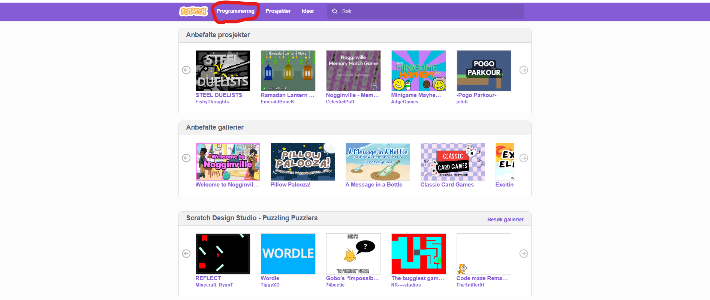

Programmering 8. trinn
Scratch

Trykk på programmering som vist på bildet.
Faktorene til et tall - scratch
Primtallsfaktorisering - scratch
Bli kjent med penn-funksjonen
Flere oppgaver til Scratch
https://oppgaver.kidsakoder.no/scratch
Tilbake